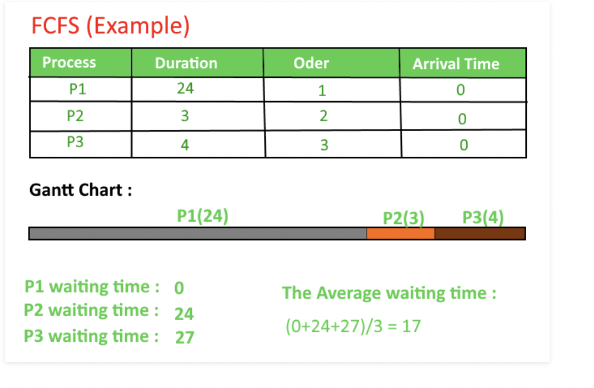
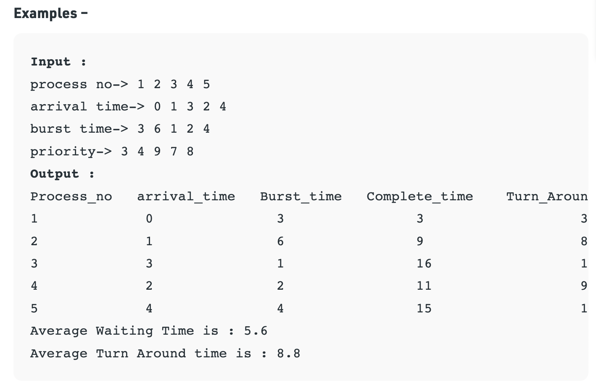
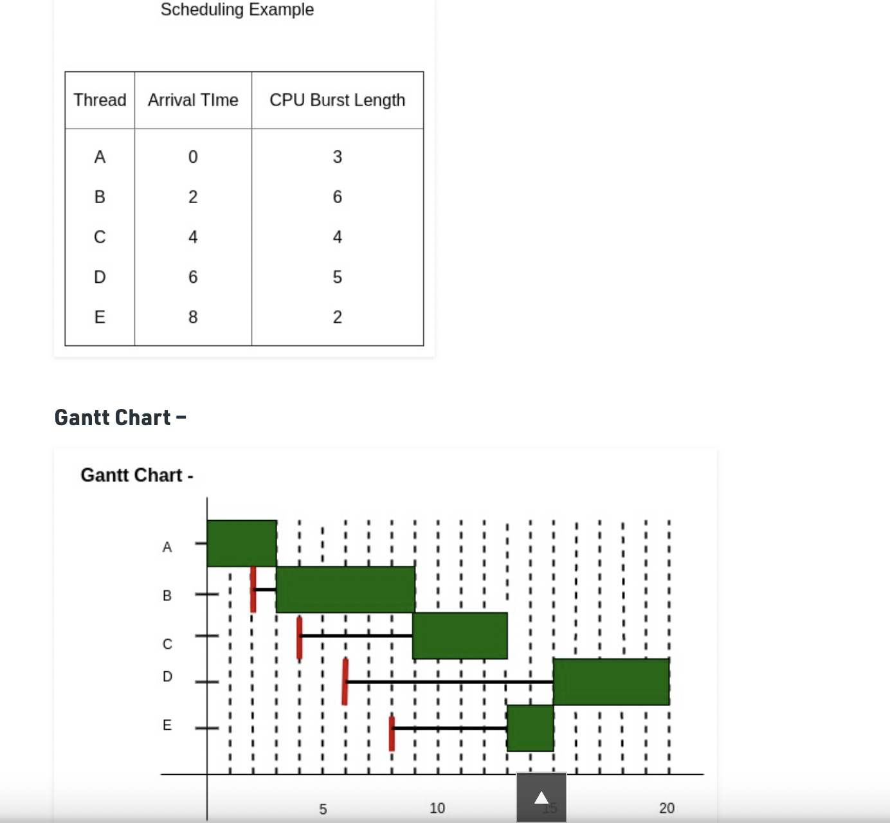

CPU Scheduling Algorithm
The process scheduling is the activity of the process manager that handles the removal of the running process from the CPU and the selection of another process on the basis of a particular strategy.
Process scheduling is an essential part of a Multiprogramming operating systems. Such operating systems allow more than one process to be loaded into the executable memory at a time and the loaded process shares the CPU using time multiplexing.
A Process Scheduler schedules different processes to be assigned to the CPU based on particular scheduling algorithms. There are 5 popular process scheduling algorithms which we are going to discuss in this chapter:
1.First-Come, First-Served (FCFS) Scheduling
2.Shortest-Job-Next (SJN) Scheduling
3.Priority Scheduling
4.Shortest Remaining Time
5.Round Robin(RR) Scheduling
These algorithms are either non-preemptive or preemptive. Non-preemptive algorithms are designed so that once a process enters the running state, it cannot be preempted until it completes its allotted time, whereas the preemptive scheduling is based on priority where a scheduler may preempt a low priority running process anytime when a high priority process enters into a ready state.
First Come First Serve (F.C.F.S)
First in, first out (FIFO), also known as first come, first served (FCFS), is the simplest scheduling algorithm. FIFO simply queues processes in the order that they arrive in the ready queue. In this, the process that comes first will be executed first and next process starts only after the previous gets fully executed. It is the easiest and simplest CPU scheduling algorithm. In this type of algorithm, processes which requests the CPU first get the CPU allocation first. This is managed with a FIFO queue. The full form of FCFS is First Come First Serve.
Implementation:
1- Input the processes along with their burst time (bt).
2- Find waiting time (wt) for all processes.
3- As first process that comes need not to wait so
waiting time for process 1 will be 0 i.e. wt[0] = 0.
4- Find waiting time for all other processes i.e. for
process i ->
wt[i] = bt[i-1] + wt[i-1] .
5- Find turnaround time = waiting_time + burst_time
for all processes.
6- Find average waiting time =
total_waiting_time / no_of_processes.
7- Similarly, find average turnaround time =
total_turn_around_time / no_of_processes.
Priority Scheduling
Priority scheduling is a non-preemptive algorithm and one of the most common scheduling algorithms in batch systems. Each process is assigned first arrival time (less arrival time process first) if two processes have same arrival time, then compare to priorities (highest process first). Also, if two processes have same priority then compare to process number (less process number first). This process is repeated while all process get executed.
1. First input the processes with their arrival time, burst time and priority.
2. First process will schedule, which have the lowest arrival time, if two or more processes will have lowest arrival time, then whoever has higher priority will schedule first.
3. Now further processes will be schedule according to the arrival time and priority of the process. (Here we are assuming that lower the priority number having higher priority). If two process priority are same then sort according to process number.
Note: In the question, They will clearly mention, which number will have higher priority and which number will have lower priority.
Once all the processes have been arrived, we can schedule them based on their priority.
Highest Rsponse Ratio (H.R.R)
Given n processes with their Arrival times and Burst times, the task is to find average waiting time and average turn around time using HRRN scheduling algorithm.
The name itself states that we need to find the response ratio of all available processes and select the one with the highest Response Ratio. A process once selected will run till completion.
Criteria – Response Ratio
Mode – Non-Preemptive
Implementation of HRRN Scheduling –
1. Input the number of processes, their arrival times and burst times.
2. Sort them according to their arrival times.
3. At any given time calculate the response ratios and select the appropriate process to be scheduled.
4. Calculate the turn around time as completion time – arrival time.
5. Calculate the waiting time as turn around time – burst time.
6. Turn around time divided by the burst time gives the normalized turn around time.
7. Sum up the waiting and turn around times of all processes and divide by the number of processes to get the average waiting and turn around time.

// C++ program for Highest Response Ratio Next (HRRN) Scheduling#include <bits/stdc++.h>using namespace std;// Defining process detailsstruct process { char name; int at, bt, ct, wt, tt; int completed; float ntt;} p[10]; int n; // Sorting Processes by Arrival Timevoid sortByArrival(){ struct process temp; int i, j; // Selection Sort applied for (i = 0; i < n - 1; i++) { for (j = i + 1; j < n; j++) { // Check for lesser arrival time if (p[i].at > p[j].at) { // Swap earlier process to front temp = p[i]; p[i] = p[j]; p[j] = temp; } } }} int main(){ int i, j, t, sum_bt = 0; char c; float avgwt = 0, avgtt = 0; n = 5; // predefined arrival times int arriv[] = { 0, 2, 4, 6, 8 }; // predefined burst times int burst[] = { 3, 6, 4, 5, 2 }; // Initializing the structure variables for (i = 0, c = 'A'; i < n; i++, c++) { p[i].name = c; p[i].at = arriv[i]; p[i].bt = burst[i]; // Variable for Completion status // Pending = 0 // Completed = 1 p[i].completed = 0; // Variable for sum of all Burst Times sum_bt += p[i].bt; } // Sorting the structure by arrival times sortByArrival(); cout << "Name " << " Arrival Time " << " Burst Time " << " Waiting Time " << " TurnAround Time " << " Normalized TT" ; for (t = p[0].at; t < sum_bt;) { // Set lower limit to response ratio float hrr = -9999; // Response Ratio Variable float temp; // Variable to store next process selected int loc; for (i = 0; i < n; i++) { // Checking if process has arrived and is Incomplete if (p[i].at <= t && p[i].completed != 1) { // Calculating Response Ratio temp = (p[i].bt + (t - p[i].at)) / p[i].bt; // Checking for Highest Response Ratio if (hrr < temp) { // Storing Response Ratio hrr = temp; // Storing Location loc = i; } } } // Updating time value t += p[loc].bt; // Calculation of waiting time p[loc].wt = t - p[loc].at - p[loc].bt; // Calculation of Turn Around Time p[loc].tt = t - p[loc].at; // Sum Turn Around Time for average avgtt += p[loc].tt; // Calculation of Normalized Turn Around Time p[loc].ntt = ((float)p[loc].tt / p[loc].bt); // Updating Completion Status p[loc].completed = 1; // Sum Waiting Time for average avgwt += p[loc].wt; cout<< "\n" << p[loc].name <<"\t" << p[loc].at; cout << "\t\t" << p[loc].bt <<"\t\t"<< p[loc].wt; cout <<"\t\t"<< p[loc].tt <<"\t\t"<< p[loc].ntt; } cout << "\nAverage waiting time: " << avgwt / n << endl; cout <<"Average Turn Around time:"<< avgtt / n;}
Shortest Job First (S.J.F)
Shortest job first (SJF) or shortest job next, is a scheduling policy that selects the waiting process with the smallest execution time to execute next. SJN, also known as Shortest Job Next (SJN), is a non-preemptive algorithm.
1. Shortest Job first has the advantage of having a minimum average waiting time among all scheduling algorithms.
2. It is a Greedy Algorithm.
3. It may cause starvation if shorter processes keep coming. This problem can be solved using the concept of ageing.
4. It is practically infeasible as Operating System may not know burst time and therefore may not sort them. While it is not possible to predict execution time, several methods can be used to estimate the execution time for a job, such as a weighted average of previous execution times. SJF can be used in specialized environments where accurate estimates of running time are available.
Shortest Job First (S.J.F)
Shortest Remaining Time First (SRTF) is the preemptive version of Shortest Job Next (SJN) algorithm, where the processor is allocated to the job closest to completion. This algorithm requires advanced concept and knowledge of CPU time required to process the job in an interactive system, and hence can’t be implemented there. But, in a batch system where it is desirable to give preference to short jobs, SRT algorithm is used. However, SRT involves more overheads than SJN, as the OS is required to frequently monitor the CPU time of the jobs in the READY queue and perform context switching.
As illustrated above, for the same set of jobs, SRT algorithm is faster in execution than SJN algorithm. But, here the overhead charges, i.e., time required for context switching has been ignored. When a job is preempted, all of it’s processing information must be saved in it’s PCB for later when it is to be continued, and the contents of the PCB of the other job to which the OS is switching are loaded into the registers in the memory. This is known as Context Switching.
Advantages:
SRTF algorithm makes the processing of the jobs faster than SJN algorithm, given it’s overhead charges are not counted.
Disadvantages:
The context switch is done a lot more times in SRTF than in SJN, and consumes CPU’s valuable time for processing. This adds up to it’s processing time and diminishes it’s advantage of fast processing.